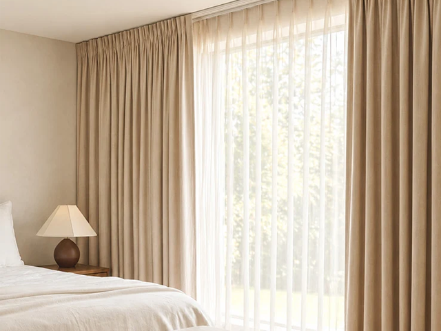

Quick-dry polyester blend curtains
Polyester and polyester-rich blends dry faster than many natural fibers and hold their shape well. They suit living rooms, bedrooms, and balcony-facing rooms.

When the monsoon arrives, the air stays heavy for weeks. Windows are wet, balconies get splashed, laundry takes longer to dry, and a faint damp smell can settle into rooms. Curtains feel this more than most furnishings. A fabric that was perfect in dry weather can turn limp, trap moisture, or start to smell musty when humidity stays high.
Curtain Canvas helps you choose rainy season curtains in Bangladesh that suit these conditions. We focus on fabrics that dry fast, wash easily, and keep their shape, with hem lengths and layering planned so your curtains stay clean, fresh, and good-looking through the wet months.
Call Our ConsultantRain brings problems that ordinary curtain choices do not account for. Here is what goes wrong when a curtain is not suited to monsoon weather:
Curtain Canvas offers a variety of curtains to suit the needs of your home during the rainy season. Explore different fabrics and styles that are easy to maintain and help keep your space fresh and comfortable.
Polyester and polyester-rich blends dry faster than many natural fibers and hold their shape well. They suit living rooms, bedrooms, and balcony-facing rooms.
Fabrics with a water-resistant finish help shed light splashes and dry quickly. They work best near balcony doors, open windows, and other areas that catch spray.
Light, easy-wash sheers let daylight through on grey days and are simple to take down, wash and rehang. They work well as a daytime layer.
A washable sheer paired with a practical outer layer gives you flexibility. You can wash or swap one layer while the other stays up, and you can adjust light and privacy through the day.
Hems that sit slightly above the floor avoid pooling water and wet floors. They suit ground-floor flats, balcony doors, and areas that often get damp.
Waterproof, quick-dry, and mildew-resistant fabrics suit wet areas where moisture is constant.
For bedrooms that need darkness during stormy, overcast, or noisy weather, we can plan blackout options in fabrics that clean easily.
Choosing the right curtain fabric for rainy weather can help your curtains stay fresh and easy to maintain. Look for materials that dry easily, resist moisture, and suit your room’s needs.
Rainy season curtains are especially useful in rooms where damp air and moisture can become a concern. Choosing suitable curtains for bedrooms, living rooms, and other spaces helps keep your home comfortable and tidy.
Curtain Canvas offers complete curtain solutions to help you prepare your home for the rainy season. You can pair this with our curtain consultancy , curtain planning or onsite visit and trial hanging services. For unusual windows or a fully tailored brief, see our customized curtain solution .
Choosing the right curtains can help you manage moisture and keep your home fresh during the monsoon. Follow these simple tips to select, clean, and care for your curtains throughout the rainy season.
At Curtain Canvas, we make curtain selection and installation easy, from your first consultation to the final fitting. Our team helps you choose suitable fabrics, designs, and measurements for your space.
1. Tell us about the room:
Share photos, window type, and how much rain or dampness reaches the space, or invite us for a visit.
2. Rainy season shortlist:
We prepare fabrics and styles chosen for quick drying, easy care, and a look that fits your interior.
3. Review samples:
Compare samples against your walls, floors, and furniture, with trial hanging available where useful.
4. Measure and confirm:
We take exact measurements, plan hem height, and agree on fabric, lining, and timeline.
5. Stitching and installation:
Curtains are made to order and fitted by our team, with a final check for hang, movement, and neat finishing.
Curtain Canvas helps you find curtains that suit your home and the challenges of rainy weather. From choosing easy-care fabrics to professional fitting, we make it simple to create a comfortable and stylish space.
Book for a Consultation